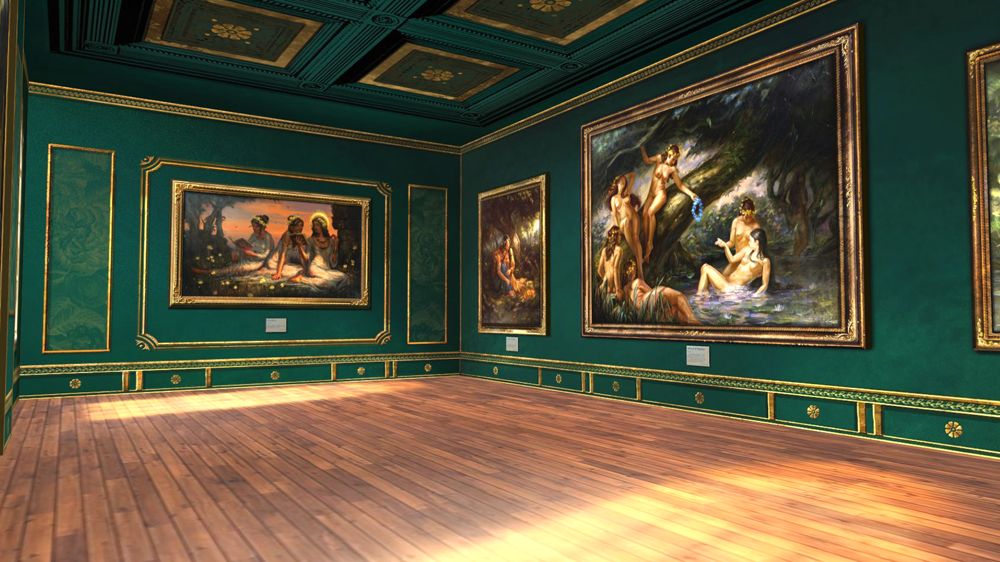
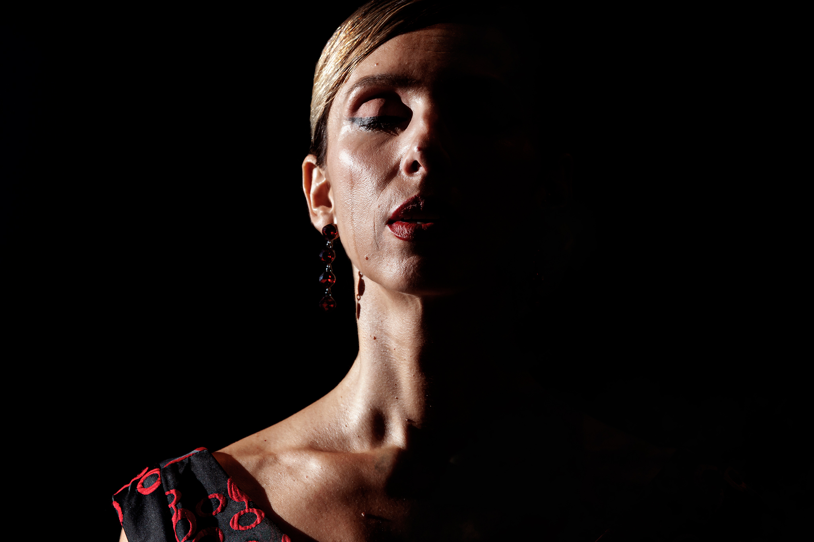
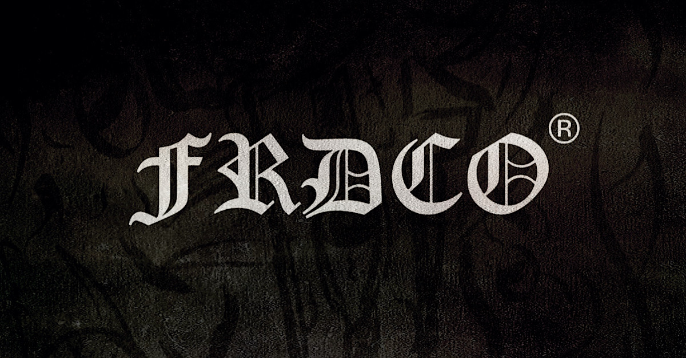
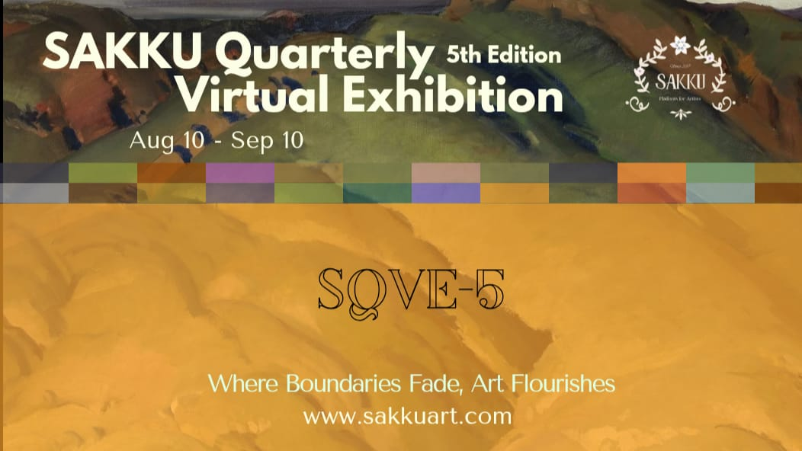

I was born a girl
Empowering art and poetry by Minna Pietarinen on UN declared Women's Rights to make gender equality visible globally.
1.10.2025

"Wreath" The Lost Pages
Wreath is a virtual art exhibit that showcases the elegance and beauty of a serene life within the Feminine Realm, based on the Lost Pages of Ofias de Lumos.
23.12.2024

El final del principio
Un viaje inesperado hacia lo más íntimo.
Esta muestra fotográfica de Mónica Polonio entrelaza la técnica digital y la narrativa visual con una intensidad emocional que convierte cada imagen en espejo de autodescubrimiento.
23.9.2025

FRDCO | LIGHTS FROM DARKNESS
A visual exhibition hall from FRDCO. Exploring the deep side from your soul to embrace the Dark ; Bringin the Lights back from the Fearless Journey. Enjoy the showcase +++
25.9.2025

SQVE5
SQVE is a seasonal online exhibition that connects artists and audiences worldwide, redefining how art is experienced through an accessible, borderless digital space.
10.8.2025
